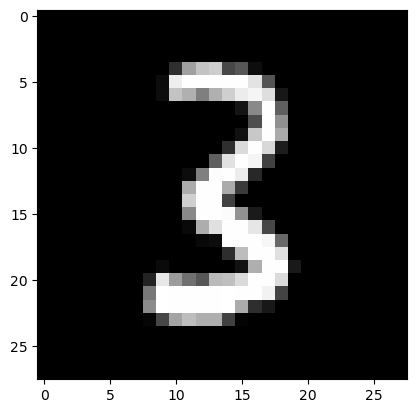

Exported source
import pickle,gzip,math,os,time,shutil,torch,matplotlib as mpl,numpy as np,matplotlib.pyplot as plt
from pathlib import Path
from torch import tensor,nn
import torch.nn.functional as Fimport pickle,gzip,math,os,time,shutil,torch,matplotlib as mpl,numpy as np,matplotlib.pyplot as plt
from pathlib import Path
from torch import tensor,nn
import torch.nn.functional as Ffrom fastcore.test import test_close
torch.set_printoptions(precision=2, linewidth=140, sci_mode=False)
torch.manual_seed(1)
mpl.rcParams['image.cmap'] = 'gray'
path_data = Path('Data')
path_gz = path_data/'mnist.pkl.gz'
with gzip.open(path_gz, 'rb') as f: ((x_train, y_train), (x_valid, y_valid), _) = pickle.load(f, encoding='latin-1')
x_train, y_train, x_valid, y_valid = map(tensor, [x_train, y_train, x_valid, y_valid])n,m = x_train.shape
c = y_train.max()+1
nh = 20class Model(nn.Module):
def __init__(self, n_in, nh, n_out):
super().__init__()
self.layers = [nn.Linear(n_in,nh), nn.ReLU(), nn.Linear(nh,n_out)]
def __call__(self, x):
for l in self.layers: x = l(x)
return xmodel = Model(m, nh, 10)
pred = model(x_train)
pred.shapetorch.Size([50000, 10])First, we will need to compute the softmax of our activations. This is defined by:
\[\hbox{softmax(x)}_{i} = \frac{e^{x_{i}}}{e^{x_{0}} + e^{x_{1}} + \cdots + e^{x_{n-1}}}\]
or more concisely:
\[\hbox{softmax(x)}_{i} = \frac{e^{x_{i}}}{\sum\limits_{0 \leq j \lt n} e^{x_{j}}}\]
In practice, we will need the log of the softmax when we calculate the loss.
def log_softmax(x): return (x.exp()/(x.exp().sum(-1,keepdim=True))).log()log_softmax(pred)tensor([[-1.92, -2.34, -2.38, ..., -2.53, -2.64, -2.51],
[-2.02, -2.34, -2.29, ..., -2.56, -2.60, -2.45],
[-1.90, -2.38, -2.31, ..., -2.39, -2.59, -2.48],
...,
[-1.97, -2.29, -2.28, ..., -2.59, -2.64, -2.57],
[-1.94, -2.35, -2.20, ..., -2.56, -2.72, -2.58],
[-2.04, -2.28, -2.26, ..., -2.60, -2.65, -2.61]], grad_fn=<LogBackward0>)Note that the formula
\[\log \left ( \frac{a}{b} \right ) = \log(a) - \log(b)\]
gives a simplification when we compute the log softmax
\[\log \left ( ab \right ) = \log(a) + \log(b)\]
def log_softmax(x): return x - x.exp().sum(-1,keepdim=True).log()Then, there is a way to compute the log of the sum of exponentials in a more stable way, called the LogSumExp trick. The idea is to use the following formula:
\[\log \left ( \sum_{j=1}^{n} e^{x_{j}} \right ) = \log \left ( e^{a} \sum_{j=1}^{n} e^{x_{j}-a} \right ) = a + \log \left ( \sum_{j=1}^{n} e^{x_{j}-a} \right )\]
where a is the maximum of the \(x_{j}\).
def logsumexp(x):
m = x.max(-1)[0]
return m + (x-m[:,None]).exp().sum(-1).log()This way, we will avoid an overflow when taking the exponential of a big activation. In PyTorch, this is already implemented for us.
def log_softmax(x): return x - x.logsumexp(-1,keepdim=True)test_close(logsumexp(pred), pred.logsumexp(-1))
sm_pred = log_softmax(pred)
sm_predtensor([[-1.92, -2.34, -2.38, ..., -2.53, -2.64, -2.51],
[-2.02, -2.34, -2.29, ..., -2.56, -2.60, -2.45],
[-1.90, -2.38, -2.31, ..., -2.39, -2.59, -2.48],
...,
[-1.97, -2.29, -2.28, ..., -2.59, -2.64, -2.57],
[-1.94, -2.35, -2.20, ..., -2.56, -2.72, -2.58],
[-2.04, -2.28, -2.26, ..., -2.60, -2.65, -2.61]], grad_fn=<SubBackward0>)The cross entropy loss for some target \(x\) and some prediction \(p(x)\) is given by:
\[ -\sum x\, \log p(x) \]
But since our \(x\)s are 1-hot encoded (actually, they’re just the integer indices), this can be rewritten as \(-\log(p_{i})\) where i is the index of the desired target.
This can be done using numpy-style integer array indexing. Note that PyTorch supports all the tricks in the advanced indexing methods discussed in that link.
y_train[:3]tensor([5, 0, 4])sm_pred[0,5],sm_pred[1,0],sm_pred[2,4](tensor(-2.26, grad_fn=<SelectBackward0>),
tensor(-2.02, grad_fn=<SelectBackward0>),
tensor(-2.37, grad_fn=<SelectBackward0>))sm_pred[[0,1,2], y_train[:3]]tensor([-2.26, -2.02, -2.37], grad_fn=<IndexBackward0>)def nll(input, target): return -input[range(target.shape[0]), target].mean()loss = nll(sm_pred, y_train)
losstensor(2.33, grad_fn=<NegBackward0>)Then use PyTorch’s implementation.
test_close(F.nll_loss(F.log_softmax(pred, -1), y_train), loss, 1e-3)In PyTorch, F.log_softmax and F.nll_loss are combined in one optimized function, F.cross_entropy.
test_close(F.cross_entropy(pred, y_train), loss, 1e-3)Basically the training loop repeats over the following steps: - get the output of the model on a batch of inputs - compare the output to the labels we have and compute a loss - calculate the gradients of the loss with respect to every parameter of the model - update said parameters with those gradients to make them a little bit better
loss_func = F.cross_entropybs=50 # batch size
xb = x_train[0:bs] # a mini-batch from x
preds = model(xb) # predictions
preds[0], preds.shape(tensor([ 0.37, -0.06, -0.10, 0.13, 0.04, 0.02, 0.05, -0.25, -0.35, -0.22], grad_fn=<SelectBackward0>),
torch.Size([50, 10]))yb = y_train[0:bs]
ybtensor([5, 0, 4, 1, 9, 2, 1, 3, 1, 4, 3, 5, 3, 6, 1, 7, 2, 8, 6, 9, 4, 0, 9, 1, 1, 2, 4, 3, 2, 7, 3, 8, 6, 9, 0, 5, 6, 0, 7, 6, 1, 8, 7, 9,
3, 9, 8, 5, 9, 3])loss_func(preds, yb)tensor(2.33, grad_fn=<NllLossBackward0>)preds[:5]tensor([[ 0.37, -0.06, -0.10, 0.13, 0.04, 0.02, 0.05, -0.25, -0.35, -0.22],
[ 0.23, -0.08, -0.03, 0.16, 0.00, -0.06, 0.01, -0.31, -0.35, -0.20],
[ 0.37, -0.10, -0.03, 0.10, -0.09, 0.02, -0.05, -0.12, -0.32, -0.21],
[ 0.26, 0.05, 0.08, 0.27, 0.06, 0.02, 0.13, -0.31, -0.36, -0.29],
[ 0.28, -0.09, 0.07, 0.23, 0.12, 0.08, 0.03, -0.36, -0.35, -0.23]], grad_fn=<SliceBackward0>)preds.argmax(dim=1)tensor([0, 0, 0, 3, 0, 0, 0, 0, 0, 0, 0, 0, 0, 3, 3, 0, 0, 0, 0, 0, 0, 0, 0, 0, 0, 0, 0, 0, 0, 3, 0, 0, 0, 0, 0, 0, 0, 0, 0, 0, 0, 3, 0, 0,
0, 0, 0, 0, 0, 0])def accuracy(out, yb): return (out.argmax(dim=1)==yb).float().mean()accuracy(preds, yb)tensor(0.08)lr = 0.5 # learning rate
epochs = 10 # how many epochs to train fordef report(loss, preds, yb): print(f'{loss:.2f}, {accuracy(preds, yb):.2f}')xb,yb = x_train[:bs],y_train[:bs]
preds = model(xb)
report(loss_func(preds, yb), preds, yb)2.33, 0.08for epoch in range(epochs):
for i in range(0, n, bs):
s = slice(i, min(n,i+bs))
xb,yb = x_train[s],y_train[s]
preds = model(xb)
loss = loss_func(preds, yb)
loss.backward()
with torch.no_grad():
for l in model.layers:
if hasattr(l, 'weight'):
l.weight -= l.weight.grad * lr
l.bias -= l.bias.grad * lr
l.weight.grad.zero_()
l.bias .grad.zero_()
report(loss, preds, yb)0.12, 0.96
0.15, 0.92
0.11, 0.96
0.12, 0.94
0.10, 0.96
0.08, 0.98
0.09, 0.98
0.08, 0.96
0.07, 0.96
0.08, 0.98$L = l(n(w,x)) N=n(w,x) and L= l(N) $
$ = $
m1 = nn.Module()
m1.foo = nn.Linear(3,4)
m1Module(
(foo): Linear(in_features=3, out_features=4, bias=True)
)list(m1.named_children())[('foo', Linear(in_features=3, out_features=4, bias=True))]m1.named_children()<generator object Module.named_children>list(m1.parameters())[Parameter containing:
tensor([[ 0.57, 0.43, -0.30],
[ 0.13, -0.32, -0.24],
[ 0.51, 0.04, 0.22],
[ 0.13, -0.17, -0.24]], requires_grad=True),
Parameter containing:
tensor([-0.01, -0.51, -0.39, 0.56], requires_grad=True)]class MLP(nn.Module):
def __init__(self, n_in, nh, n_out):
super().__init__()
self.l1 = nn.Linear(n_in,nh)
self.l2 = nn.Linear(nh,n_out)
self.relu = nn.ReLU()
def forward(self, x): return self.l2(self.relu(self.l1(x)))model = MLP(m, nh, 10)
model.l1Linear(in_features=784, out_features=20, bias=True)modelMLP(
(l1): Linear(in_features=784, out_features=20, bias=True)
(l2): Linear(in_features=20, out_features=10, bias=True)
(relu): ReLU()
)for name,l in model.named_children(): print(f"{name}: {l}")l1: Linear(in_features=784, out_features=20, bias=True)
l2: Linear(in_features=20, out_features=10, bias=True)
relu: ReLU()for p in model.parameters(): print(p.shape)torch.Size([20, 784])
torch.Size([20])
torch.Size([10, 20])
torch.Size([10])def fit():
for epoch in range(epochs):
for i in range(0, n, bs):
s = slice(i, min(n,i+bs))
xb,yb = x_train[s],y_train[s]
preds = model(xb)
loss = loss_func(preds, yb)
loss.backward()
with torch.no_grad():
for p in model.parameters(): p -= p.grad * lr
model.zero_grad()
report(loss, preds, yb)fit()0.22, 0.90
0.21, 0.94
0.21, 0.94
0.22, 0.94
0.21, 0.96
0.21, 0.94
0.19, 0.94
0.19, 0.92
0.18, 0.94
0.17, 0.94Behind the scenes, PyTorch overrides the __setattr__ function in nn.Module so that the submodules you define are properly registered as parameters of the model.
class MyModule:
def __init__(self, n_in, nh, n_out):
self._modules = {}
self.l1 = nn.Linear(n_in,nh)
self.l2 = nn.Linear(nh,n_out)
def __setattr__(self,k,v):
if not k.startswith("_"): self._modules[k] = v
super().__setattr__(k,v)
def __repr__(self): return f'{self._modules}'
def parameters(self):
for l in self._modules.values(): yield from l.parameters()mdl = MyModule(m,nh,10)
mdl{'l1': Linear(in_features=784, out_features=20, bias=True), 'l2': Linear(in_features=20, out_features=10, bias=True)}for p in mdl.parameters(): print(p.shape)torch.Size([20, 784])
torch.Size([20])
torch.Size([10, 20])
torch.Size([10])from functools import reduceWe can use the original layers approach, but we have to register the modules.
layers = [nn.Linear(m,nh), nn.ReLU(), nn.Linear(nh,10)]class Model(nn.Module):
def __init__(self, layers):
super().__init__()
self.layers = layers
for i,l in enumerate(self.layers): self.add_module(f'layer_{i}', l)
def forward(self, x): return reduce(lambda val,layer: layer(val), self.layers, x)model = Model(layers)
modelModel(
(layer_0): Linear(in_features=784, out_features=20, bias=True)
(layer_1): ReLU()
(layer_2): Linear(in_features=20, out_features=10, bias=True)
)model(xb).shapetorch.Size([50, 10])nn.ModuleList does this for us.
class SequentialModel(nn.Module):
def __init__(self, layers):
super().__init__()
self.layers = nn.ModuleList(layers)
def forward(self, x):
for l in self.layers: x = l(x)
return xmodel = SequentialModel(layers)
modelSequentialModel(
(layers): ModuleList(
(0): Linear(in_features=784, out_features=20, bias=True)
(1): ReLU()
(2): Linear(in_features=20, out_features=10, bias=True)
)
)fit()0.21, 0.92
0.20, 0.96
0.13, 0.98
0.08, 0.98
0.08, 0.98
0.14, 0.94
0.12, 0.94
0.12, 0.94
0.09, 0.96
0.06, 0.98nn.Sequential is a convenient class which does the same as the above:
model = nn.Sequential(nn.Linear(m,nh), nn.ReLU(), nn.Linear(nh,10))fit()
loss_func(model(xb), yb), accuracy(model(xb), yb)0.12, 0.94
0.12, 0.98
0.16, 0.96
0.11, 0.98
0.22, 0.96
0.14, 0.96
0.20, 0.96
0.13, 0.98
0.07, 0.98
0.07, 0.96(tensor(0.02, grad_fn=<NllLossBackward0>), tensor(1.))modelSequential(
(0): Linear(in_features=784, out_features=20, bias=True)
(1): ReLU()
(2): Linear(in_features=20, out_features=10, bias=True)
)class Optimizer():
def __init__(self, params, lr=0.5): self.params,self.lr=list(params),lr
def step(self):
with torch.no_grad():
for p in self.params: p -= p.grad * self.lr
def zero_grad(self):
for p in self.params: p.grad.data.zero_()model = nn.Sequential(nn.Linear(m,nh), nn.ReLU(), nn.Linear(nh,10))opt = Optimizer(model.parameters())for epoch in range(epochs):
for i in range(0, n, bs):
s = slice(i, min(n,i+bs))
xb,yb = x_train[s],y_train[s]
preds = model(xb)
loss = loss_func(preds, yb)
loss.backward()
opt.step()
opt.zero_grad()
report(loss, preds, yb)0.28, 0.90
0.26, 0.92
0.24, 0.92
0.23, 0.92
0.22, 0.92
0.22, 0.90
0.19, 0.92
0.21, 0.90
0.20, 0.94
0.18, 0.94PyTorch already provides this exact functionality in optim.SGD (it also handles stuff like momentum, which we’ll look at later)
from torch import optimdef get_model():
model = nn.Sequential(nn.Linear(m,nh), nn.ReLU(), nn.Linear(nh,10))
return model, optim.SGD(model.parameters(), lr=lr)model,opt = get_model()
loss_func(model(xb), yb)tensor(2.30, grad_fn=<NllLossBackward0>)for epoch in range(epochs):
for i in range(0, n, bs):
s = slice(i, min(n,i+bs))
xb,yb = x_train[s],y_train[s]
preds = model(xb)
loss = loss_func(preds, yb)
loss.backward()
opt.step()
opt.zero_grad()
report(loss, preds, yb)0.22, 0.94
0.15, 0.94
0.11, 0.96
0.09, 0.98
0.09, 0.98
0.09, 0.98
0.09, 0.98
0.08, 0.98
0.05, 0.98
0.06, 0.98It’s clunky to iterate through minibatches of x and y values separately:
xb = x_train[s]
yb = y_train[s]Instead, let’s do these two steps together, by introducing a Dataset class:
xb,yb = train_ds[s]class Dataset():
def __init__(self, x, y): self.x,self.y = x,y
def __len__(self): return len(self.x)
def __getitem__(self, i): return self.x[i],self.y[i]train_ds,valid_ds = Dataset(x_train, y_train),Dataset(x_valid, y_valid)
assert len(train_ds)==len(x_train)
assert len(valid_ds)==len(x_valid)xb,yb = train_ds[0:5]
assert xb.shape==(5,28*28)
assert yb.shape==(5,)
xb,yb(tensor([[0., 0., 0., ..., 0., 0., 0.],
[0., 0., 0., ..., 0., 0., 0.],
[0., 0., 0., ..., 0., 0., 0.],
[0., 0., 0., ..., 0., 0., 0.],
[0., 0., 0., ..., 0., 0., 0.]]),
tensor([5, 0, 4, 1, 9]))model,opt = get_model()for epoch in range(epochs):
for i in range(0, n, bs):
xb,yb = train_ds[i:min(n,i+bs)]
preds = model(xb)
loss = loss_func(preds, yb)
loss.backward()
opt.step()
opt.zero_grad()
report(loss, preds, yb)0.29, 0.90
0.26, 0.90
0.25, 0.90
0.21, 0.92
0.22, 0.92
0.20, 0.94
0.24, 0.88
0.24, 0.88
0.25, 0.90
0.22, 0.90Previously, our loop iterated over batches (xb, yb) like this:
for i in range(0, n, bs):
xb,yb = train_ds[i:min(n,i+bs)]
...Let’s make our loop much cleaner, using a data loader:
for xb,yb in train_dl:
...class DataLoader():
def __init__(self, ds, bs): self.ds,self.bs = ds,bs
def __iter__(self):
for i in range(0, len(self.ds), self.bs): yield self.ds[i:i+self.bs]train_dl = DataLoader(train_ds, bs)
valid_dl = DataLoader(valid_ds, bs)xb,yb = next(iter(valid_dl))
xb.shapetorch.Size([50, 784])ybtensor([3, 8, 6, 9, 6, 4, 5, 3, 8, 4, 5, 2, 3, 8, 4, 8, 1, 5, 0, 5, 9, 7, 4, 1, 0, 3, 0, 6, 2, 9, 9, 4, 1, 3, 6, 8, 0, 7, 7, 6, 8, 9, 0, 3,
8, 3, 7, 7, 8, 4])plt.imshow(xb[0].view(28,28))
yb[0]tensor(3)
model,opt = get_model()def fit():
for epoch in range(epochs):
for xb,yb in train_dl:
preds = model(xb)
loss = loss_func(preds, yb)
loss.backward()
opt.step()
opt.zero_grad()
report(loss, preds, yb)fit()
loss_func(model(xb), yb), accuracy(model(xb), yb)0.32, 0.90
0.25, 0.90
0.22, 0.90
0.21, 0.92
0.17, 0.94
0.15, 0.94
0.13, 0.96
0.13, 0.94
0.12, 0.96
0.12, 0.98(tensor(0.15, grad_fn=<NllLossBackward0>), tensor(0.96))We want our training set to be in a random order, and that order should differ each iteration. But the validation set shouldn’t be randomized.
import randomclass Sampler():
def __init__(self, ds, shuffle=False): self.n,self.shuffle = len(ds),shuffle
def __iter__(self):
res = list(range(self.n))
if self.shuffle: random.shuffle(res)
return iter(res)from itertools import islicess = Sampler(train_ds)it = iter(ss)
for o in range(5): print(next(it))0
1
2
3
4list(islice(ss, 5))[0, 1, 2, 3, 4]ss = Sampler(train_ds, shuffle=True)
list(islice(ss, 5))[38864, 48491, 457, 38117, 46961]import fastcore.all as fcclass BatchSampler():
def __init__(self, sampler, bs, drop_last=False): fc.store_attr()
def __iter__(self): yield from fc.chunked(iter(self.sampler), self.bs, drop_last=self.drop_last)batchs = BatchSampler(ss, 4)
list(islice(batchs, 5))[[48663, 21900, 25004, 10521],
[2935, 15296, 32118, 49052],
[9673, 12394, 26887, 23110],
[11959, 11965, 44887, 23025],
[7462, 42558, 2649, 48055]]def collate(b):
xs,ys = zip(*b)
return torch.stack(xs),torch.stack(ys)class DataLoader():
def __init__(self, ds, batchs, collate_fn=collate): fc.store_attr()
def __iter__(self): yield from (self.collate_fn(self.ds[i] for i in b) for b in self.batchs)train_samp = BatchSampler(Sampler(train_ds, shuffle=True ), bs)
valid_samp = BatchSampler(Sampler(valid_ds, shuffle=False), bs)train_dl = DataLoader(train_ds, batchs=train_samp)
valid_dl = DataLoader(valid_ds, batchs=valid_samp)xb,yb = next(iter(valid_dl))
plt.imshow(xb[0].view(28,28))
yb[0]tensor(3)
xb.shape,yb.shape(torch.Size([50, 784]), torch.Size([50]))model,opt = get_model()fit()0.48, 0.86
0.14, 0.96
0.18, 0.94
0.11, 0.96
0.13, 0.98
0.12, 0.94
0.08, 0.98
0.16, 0.96
0.28, 0.94
0.10, 0.96import torch.multiprocessing as mp
from fastcore.basics import store_attrtrain_ds[[3,6,8,1]](tensor([[0., 0., 0., ..., 0., 0., 0.],
[0., 0., 0., ..., 0., 0., 0.],
[0., 0., 0., ..., 0., 0., 0.],
[0., 0., 0., ..., 0., 0., 0.]]),
tensor([1, 1, 1, 0]))train_ds.__getitem__([3,6,8,1])(tensor([[0., 0., 0., ..., 0., 0., 0.],
[0., 0., 0., ..., 0., 0., 0.],
[0., 0., 0., ..., 0., 0., 0.],
[0., 0., 0., ..., 0., 0., 0.]]),
tensor([1, 1, 1, 0]))for o in map(train_ds.__getitem__, ([3,6],[8,1])): print(o)(tensor([[0., 0., 0., ..., 0., 0., 0.],
[0., 0., 0., ..., 0., 0., 0.]]), tensor([1, 1]))
(tensor([[0., 0., 0., ..., 0., 0., 0.],
[0., 0., 0., ..., 0., 0., 0.]]), tensor([1, 0]))class DataLoader():
def __init__(self, ds, batchs, n_workers=1, collate_fn=collate): fc.store_attr()
def __iter__(self):
with mp.Pool(self.n_workers) as ex: yield from ex.map(self.ds.__getitem__, iter(self.batchs))train_dl = DataLoader(train_ds, batchs=train_samp, n_workers=2)
it = iter(train_dl)xb,yb = next(it)
xb.shape,yb.shape(torch.Size([50, 784]), torch.Size([50]))from torch.utils.data import DataLoader, SequentialSampler, RandomSampler, BatchSamplertrain_samp = BatchSampler(RandomSampler(train_ds), bs, drop_last=False)
valid_samp = BatchSampler(SequentialSampler(valid_ds), bs, drop_last=False)train_dl = DataLoader(train_ds, batch_sampler=train_samp, collate_fn=collate)
valid_dl = DataLoader(valid_ds, batch_sampler=valid_samp, collate_fn=collate)model,opt = get_model()
fit()
loss_func(model(xb), yb), accuracy(model(xb), yb)0.21, 0.92
0.33, 0.88
0.21, 0.96
0.31, 0.92
0.10, 0.98
0.09, 0.96
0.21, 0.94
0.15, 0.98
0.23, 0.94
0.03, 1.00(tensor(0.07, grad_fn=<NllLossBackward0>), tensor(0.96))PyTorch can auto-generate the BatchSampler for us:
train_dl = DataLoader(train_ds, bs, sampler=RandomSampler(train_ds), collate_fn=collate)
valid_dl = DataLoader(valid_ds, bs, sampler=SequentialSampler(valid_ds), collate_fn=collate)PyTorch can also generate the Sequential/RandomSamplers too:
train_dl = DataLoader(train_ds, bs, shuffle=True, drop_last=True, num_workers=2)
valid_dl = DataLoader(valid_ds, bs, shuffle=False, num_workers=2)model,opt = get_model()
fit()
loss_func(model(xb), yb), accuracy(model(xb), yb)0.20, 0.92
0.27, 0.96
0.25, 0.92
0.02, 1.00
0.07, 1.00
0.25, 0.92
0.35, 0.94
0.19, 0.90
0.02, 1.00
0.20, 0.94(tensor(0.06, grad_fn=<NllLossBackward0>), tensor(0.98))Our dataset actually already knows how to sample a batch of indices all at once:
train_ds[[4,6,7]](tensor([[0., 0., 0., ..., 0., 0., 0.],
[0., 0., 0., ..., 0., 0., 0.],
[0., 0., 0., ..., 0., 0., 0.]]),
tensor([9, 1, 3]))…that means that we can actually skip the batch_sampler and collate_fn entirely:
train_dl = DataLoader(train_ds, sampler=train_samp)
valid_dl = DataLoader(valid_ds, sampler=valid_samp)xb,yb = next(iter(train_dl))
xb.shape,yb.shape(torch.Size([1, 50, 784]), torch.Size([1, 50]))You always should also have a validation set, in order to identify if you are overfitting.
We will calculate and print the validation loss at the end of each epoch.
(Note that we always call model.train() before training, and model.eval() before inference, because these are used by layers such as nn.BatchNorm2d and nn.Dropout to ensure appropriate behaviour for these different phases.)
def fit(epochs, model, loss_func, opt, train_dl, valid_dl):
for epoch in range(epochs):
model.train()
for xb,yb in train_dl:
loss = loss_func(model(xb), yb)
loss.backward()
opt.step()
opt.zero_grad()
model.eval()
with torch.no_grad():
tot_loss,tot_acc,count = 0.,0.,0
for xb,yb in valid_dl:
pred = model(xb)
n = len(xb)
count += n
tot_loss += loss_func(pred,yb).item()*n
tot_acc += accuracy (pred,yb).item()*n
print(epoch, tot_loss/count, tot_acc/count)
return tot_loss/count, tot_acc/countdef get_dls(train_ds, valid_ds, bs, **kwargs):
return (DataLoader(train_ds, batch_size=bs, shuffle=True, **kwargs),
DataLoader(valid_ds, batch_size=bs*2, **kwargs))Now, our whole process of obtaining the data loaders and fitting the model can be run in 3 lines of code:
train_dl,valid_dl = get_dls(train_ds, valid_ds, bs)
model,opt = get_model()0 0.20109995853155851 0.9422000014781952
1 0.1778342595230788 0.9489000052213669
2 0.19040836207568645 0.9405000030994415
3 0.16341516491025687 0.9513000059127807
4 0.1552597831375897 0.956200003027916
5 0.15336507064756005 0.9582000058889389
6 0.17772509098984302 0.9491000014543534
7 0.15932741371914744 0.9568000066280365
8 0.16316431357990951 0.9562000054121017
9 0.1839916431158781 0.9480000025033951
CPU times: user 27.6 s, sys: 40.1 s, total: 1min 7s
Wall time: 11.3 s